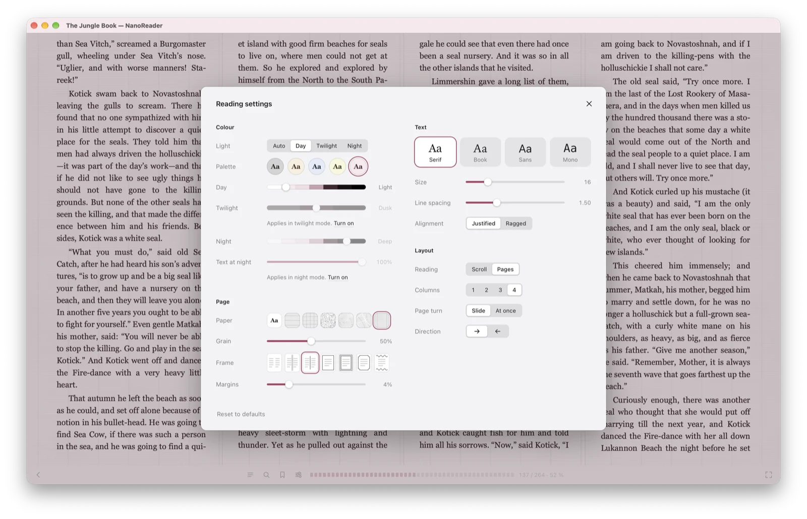
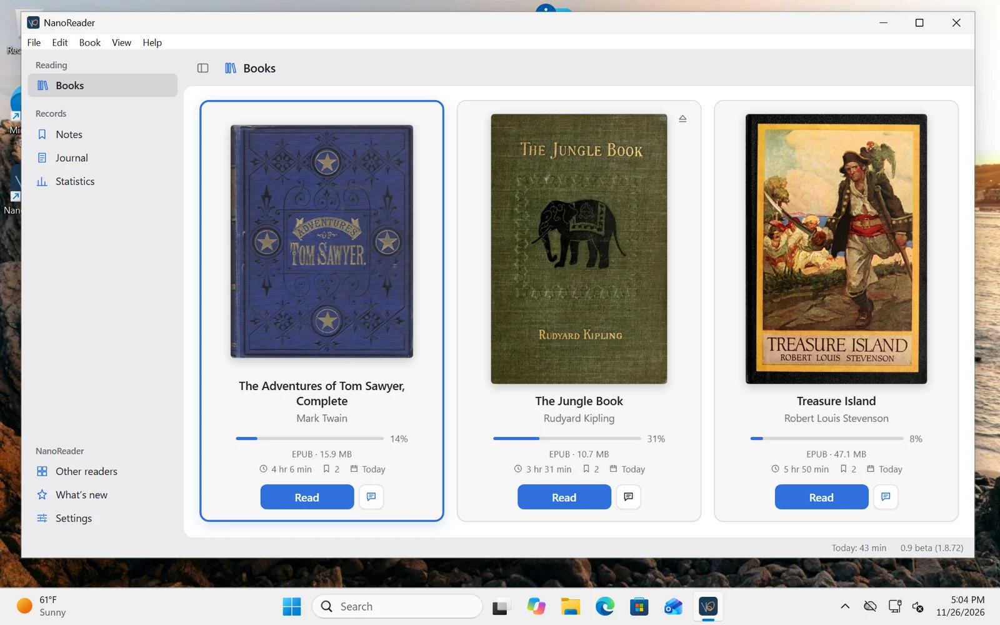
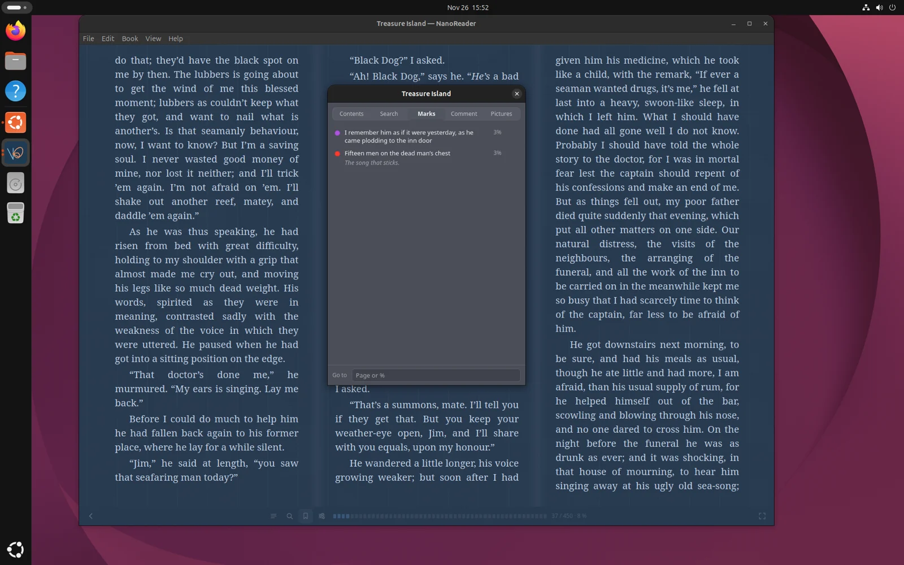
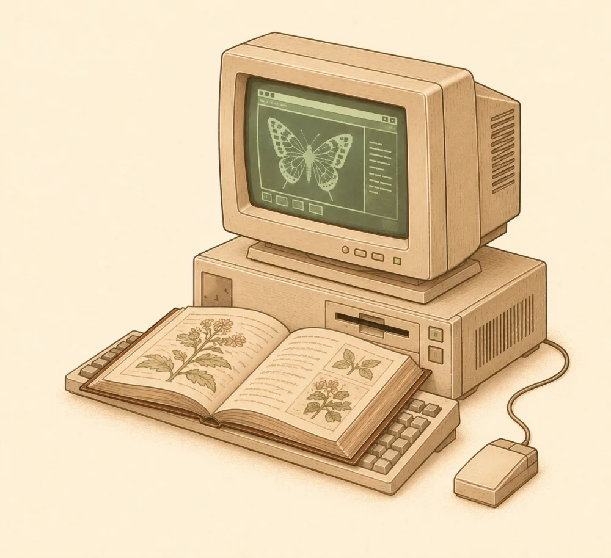

For three books at once. Free.
DMG, 17 MB
On the Mac there is also the native JustReader, free as well, from the App Store. How they differ →
This is a beta. NanoReader is ready for reading, but something may still go wrong. If you notice it, write to us.



Three books is a deliberate limit: these are books without a library. For a library there are PlainReader and ContinuousReader on Apple’s devices.
